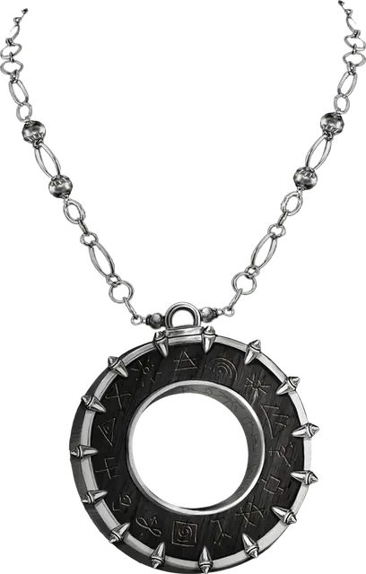

Амулет планов
Amulet of the Planes
Чудесный предмет, очень редкий (требуется настройка)

Рекомендованная стоимость 40 000 ЗМ
Пока вы носите этот амулет, вы можете действием Магия назвать хорошо вам известное местоположение на другом плане бытия; совершите проверку Интеллекта (Тайная магия) Сл 15. В случае успеха вы сотворяете заклинание Планарный переход. При провале вы и каждое существо и объект в пределах 15 футов от вас перемещаетесь в случайное местоположение, определяемое броском 1к100 по следующей таблице.
| 1к100 | Назначение |
| 01-60 | Случайное местоположение на названном плане |
| 61-70 | Случайное местоположение на Внутреннем Плане, определяемом броском 1к6: это План Воздуха, если выпадет 1; План Земли при 2; План Огня при 3; План Воды при 4; Страна Фей при 5; и Царство теней, если выпадет 6. |
| 71-80 | Случайное местоположение на Внешнем Плане, определяемом броском 1к8: это Арборея, если выпадет 1; Аркадия при 2; Звериные земли при 3; Битопия при 4; Элизиум при 5; Механус при 6; Гора Селестия при 7; и Исгард, если выпадет 8. |
| 81-90 | Случайное местоположение на Внешнем Плане, определяемом броском 1к8: это Бездна, если выпадет 1; Ахерон при 2; Карцери при 3; Геенна при 4; Гадес при 5; Лимбо при 6; Девять Преисподних при 7; и Пандемониум, если выпадет 8. |
| 91-00 | Случайное местоположение на Астральном Плане. |